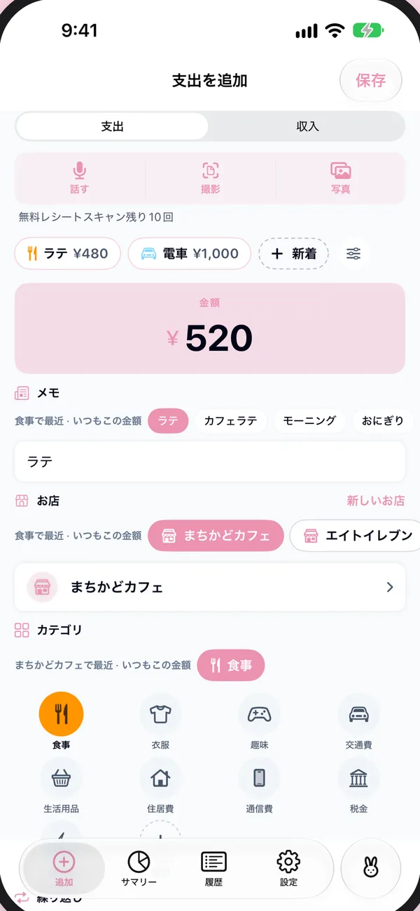
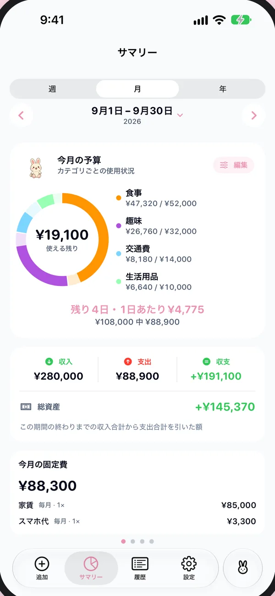
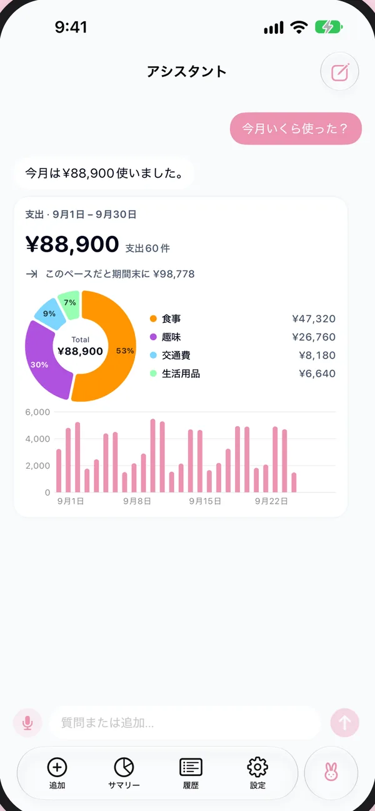

iPhoneのための、お金の日記
記録はワンタップ。
数えるのはMochi。
いつ・どこで・何に使うかをBunnyBankが覚えるから、ほとんどの支出はワンタップ。レシートを撮っても、話しかけてもOK。今月あといくら使えるかも、ひと目でわかります。

配信中無料ダウンロード・サブスクなし



スマート候補
あなたの一日を覚えるから、ほとんど打たなくていい。
今いる場所、時間、今日の予定、いつもの金額。BunnyBankはそれを手がかりに、次に選ぶお店・カテゴリ・メモを先回りして用意します。
朝8時すぎの駅前では、いつものカフェが先頭に。お昼はカレンダーにあるお店が先に。帰り道は、まだ登録していない近くのお店も候補に。そして25日には家賃が待っています。
-
今いる場所
この近くでいつも使うお店が先頭に。まだ登録していない近くのお店も表示され、お店の場所は記録した場所から自然に覚えます。
-
時間
朝のコーヒー、金曜の飲み会、25日の家賃。時間帯・曜日・月の中の日付が、すべて手がかりになります。
-
今日の予定
カレンダーに「Ayaとディナー」とあれば食事が先に。お店の名前があれば、そのお店が先に。読むのは今日の予定だけです。
-
いつものくせ
¥480ならたぶんコーヒー。電車のあとにいつも記録するものも覚えます。くせは変わるもの。3週間前の習慣は、今日の半分の重みになります。
ぜんぶ、あなたのiPhoneの中で。場所は支出と一緒に、iPhoneとあなたのiCloudにだけ保存されます。カレンダーの予定は保存も送信もしません。位置情報もカレンダーも使うかどうかは自由で、学習した内容は設定からいつでも消去できます。
がんばらない家計簿。
表計算も、罪悪感もいりません。勝手に埋まっていく小さな日記で、今月のお金がすっきり見えます。

今日あといくら、までわかる。
カテゴリごとに予算を決めると、残りを「1日あたりの目安」に。今日いくらまで使っても、月末に間に合うかがわかります。
- 週・月・年の収入、支出、貯金
- カテゴリ別・お店別・日別のグラフ
- 週と月のやさしいふりかえりと、固定費のリマインダー

聞けば、グラフで答えてくれる。
「どこで一番使ってる？」「今週の食費はいくら？」アシスタントが数字とグラフで答えます。支出の追加も、話しかけるだけ。
- Apple Intelligenceで、iPhoneの中で動作
- 聞いたことが開発者やほかの誰かに送られることはありません
ほかにも、いろいろ
- レシートを撮るだけ
- 紙のレシートを撮るか、ネット注文のスクショを共有すると、自動で入力されます。
- 話すだけ
- 「ローソンでランチ、850円」。確認して保存するだけ。
- テンプレート
- 毎日のコーヒーや通勤を、ワンタップで。
- ウィジェットとSiri
- ホーム画面・ロック画面のウィジェット、コントロールセンター、「BunnyBankでコーヒー」。
- 複数の通貨
- 旅行先では現地の通貨で。海外に引っ越したら、基本通貨ごと切り替え。
- 旅先を覚える
- 前に行った街に戻ると、そのとき使ったものが先に出てきます。

あなたの日記は、あなたの手元に。
アカウント登録も、開発者のサーバーもありません。書いたことはあなたのiPhoneとiCloudの中だけにあり、私には見えません。
- アカウント不要
- 広告なし
- 追跡なし
無料。サブスクなし。
支出の記録に必要なものは、すべて無料。もっと使いたい機能だけを買い切りで追加でき、同じApple AccountのiPhoneならどれでも使えます。
レシート読み取り・音声入力・アシスタントには、Apple Intelligence対応のiPhoneが必要です。
BUNNYBANK
オプション · 買い切り
ありがとう！♡ またどうぞ